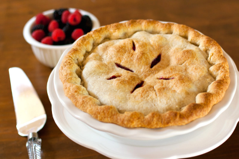

World's Healthiest Foods
World's Healthiest Foods: Mamas Homemade Lemon Meringue Pie

Ingredients:
- 1 cup white sugar
- 2 tablespoons all-purpose flour
- 3 tablespoons cornstarch
- ¼ teaspoon salt
- 1½ cups water
- 2 lemons, juiced and zested
- 2 tablespoons butter
- 4 egg yolks, beaten
- 1 (9 inch) pie crust, baked
- 4 egg whites
- 6 tablespoons white sugar
Directions:
- Preheat oven: Preheat oven to 350 degrees F (175 degrees C).
-
Make Lemon Filling: In a medium saucepa..
- whisk together 1 cup sugar, flour, cornstarch, and salt.
- Stir in water, lemon juice and lemon zest.
- Cook over medium-high heat, stirring frequently, until mixture comes to a boil.
- Stir in butter.
- Place egg yolks in a small bowl and gradually whisk in 1/2 cup of hot sugar mixture.
- Whisk egg yolk mixture back into remaining sugar mixture.
- Bring to a boil and continue to cook while stirring constantly until thick.
- Remove from heat.
- Pour filling into baked pastry shell.
-
Make Lemon Filling: In a large glass or metal bowl ...
- whip egg whites until foamy.
- Add sugar gradually, and continue to whip until stiff peaks form.
- Spread meringue over pie, sealing the edges at the crust.
-
Bake: Bake in preheated oven for 10 minutes, or until meringue is golden brown.